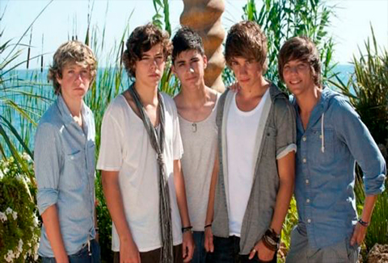

Fue una boy-band creada en Londres, Reino Unido en 2010 por el programa "The X Factor". En ese momento del reality, la banda tenía de "padrino" a Simon Cowell (Creador y juez del show) y estaba formada por Harry Styles, Louis Tomlinson, Niall Horan, Liam Payne y Zayn Malik. Cada uno de ellos hicieron sus audiciones y quedaron expulsados de la competencia, hasta que una de las juezas (Nicole Scherzinger) dio la propuesta de que formen parte de un grupo para volver al programa, y se terminó llamando One Direction. Aunque la banda quedó en tercer puesto, Simon Cowell pagó un contrato discográfico para que saquen un disco con "Syco Music".